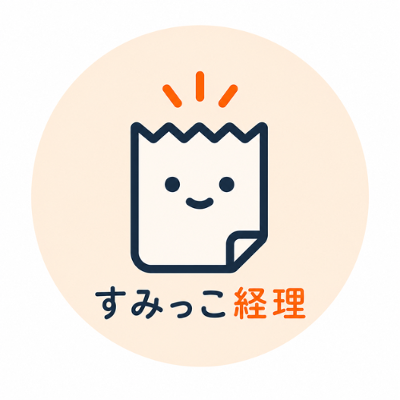

<ons-page id="homePage">
  <ons-toolbar>
    <div class="left">
      <span class="brand-mark brand-mark-sm">
        
        <span><span class="b-sumikko">すみっこ</span><span class="b-keiri">経理</span></span>
      </span>
    </div>
    <div class="right">
      <ons-toolbar-button id="settingsBtn">設定</ons-toolbar-button>
    </div>
  </ons-toolbar>

  <div class="wrap">
    <div class="home-head">
      <h1>レシート履歴</h1>
      <div class="sub" id="homeLead">当月</div>
    </div>
    <div class="receipt-list" id="receiptList"></div>
    <div class="empty-box" id="homeEmpty" style="display:none">この月の領収書はまだありません<br><span style="font-weight:700;color:#94a3b8;font-size:0.85rem">右下の ＋ から撮影できます</span></div>
  </div>

  <ons-fab class="fab-upload" position="bottom right" id="uploadFab">
    <ons-icon icon="md-plus"></ons-icon>
  </ons-fab>
</ons-page>
